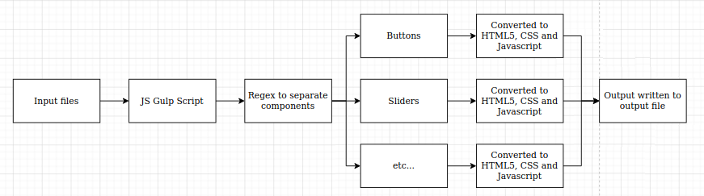

As part of some work I was doing in an internship, I was tasked with creating an HTML1 to HTML5 converter. Whilst the code itself has been left with the company, the concept is demonstrated below.
Essentially, a javascript Gulp task pipeline was created. Firstly, it would scan through the given HTML1 files and pass them to various functions. Each function would replace certain, common aspects of the file with compatible HTML5 code. This included buttons, button groups, titles, backgrounds, sliders and more. It would do this by running a regex on the files and finding these elements. Then, it would rip the necessary HTML5, CSS and Javascript information using further regexes, format it and paste into the output file. This would be done for each and every HTML file and the output would be a converted set of web pages.